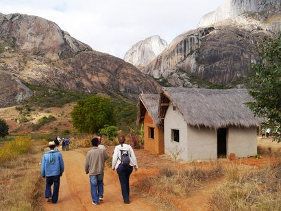

Madagascar · 7 days
Nature & Cultural Hike: Ambalavao to Ranomafana
Ring-tailed lemurs in Anja reserve, rainforest hikes in Ranomafana National Park, Betsileo and Antanala villages, and craft workshops in Ambositra and Antsirabe.
From $1,000 per person
See the itinerary →